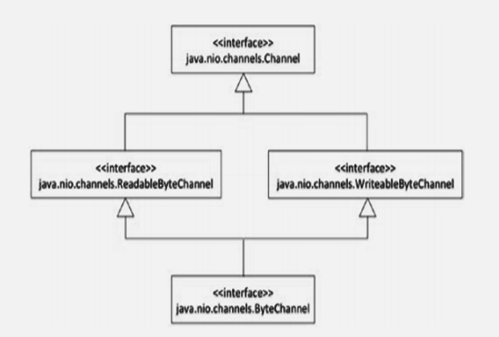

JAVA SE 8
Usando a palavra chave final
Uma classe final é uma classe não herdável - isto é, se você declara uma classe como final, você não pode subclassificá-la.
Dois motivos importantes que você pode não querer permitir que uma classe seja subclasse são:
Para evitar uma mudança de comportamento pela subclasse. Em alguns casos, você pode pensar que a implementação da classe está completa e não deve ser alterada. Se sobescrever for permitido, o comportamento dos métodos poderá ser alterado. Você sabe que um objeto derivado pode ser usado onde um objeto de classe base é necessário, e você pode não preferir em alguns casos. Por fazer uma classe final, os usuários da classe são assegurados do comportamento inalterado.
Performance melhorada. Todas as chamadas de método de uma classe final podem ser resolvidas no próprio tempo de compilação. Como não há possibilidade de sobrescrever os métodos, não é necessário resolver a chamada real em tempo de execução para as classes finais, o que se traduz em desempenho aprimorado. Pela mesma razão, as classes finais encorajam o inlining dos métodos. Com inlining, um corpo de método pode ser expandido como parte do próprio código de chamada, evitando assim a sobrecarga de fazer uma chamada de função. Se as chamadas precisarem ser resolvidas em tempo de execução, elas não poderão ser inlined.
Na biblioteca Java, muitas classes são declaradas como finais; por exemplo, as classes String (java.lang.String) e System (java.lang.System). Essas classes são usadas extensivamente em programas Java. Se essas duas classes não forem declaradas finais, é possível que alguém altere o comportamento dessas classes pela subclasse e, em seguida, todo o programa pode começar a se comportar de maneira diferente. Para evitar tal problema, amplamente classes usadas como essas e classes de wrapper, como Number e Integer, são final na biblioteca Java.
Métodos e Variáveis Final
Em uma classe, você pode declarar um método final. O método final não pode ser sobrescrito. Portanto, se você declarou um método como final em uma classe não final, poderá estender a classe, mas não poderá sobrescrever o método final. No entanto, outros métodos não-final na classe base podem ser sobrescritos na implementação da classe derivada.
Considere os métodos setParentShape() e getParentShape() na classe Shape:
public abstract class Shape {
// other class members elided
final public void setParentShape(Shape shape) {
// corpo do método
}
public Shape getParentShape() {
// corpo do método
}
}
Nesse caso, a classe Circle (subclasse de Shape) pode sobrescrever apenas getParentShape(); Se você tentar sobrescrever o método final, você receberá o seguinte erro: "Cannot override the final method from Shape".
Variáveis final são como CD-ROMs: uma vez que você escreve alguma coisa nelas, você não pode escrever novamente. Na programação, constantes como PI podem ser declaradas como final, pois você não quer que ninguém modifique seus valores. Se você tentar alterar uma variável final após a inicialização, você receberá um erro do compilador.
Classes Aninhadas
Criar classes internas incluindo membros estáticos, classe local, classes aninhada, e classes interna anônimas.
Classes definidas no corpo de outra classe (ou interface) são conhecidas como classes aninhadas. Normalmente, você define uma classe, que é uma classe de nível superior pertencente diretamente a um pacote. Em contraste, as classes aninhadas são classes contidas em outra classe ou interface.
Qual é o benefício de criar classes dentro de outra classe ou interface? Existem vários benefícios. Primeiro, você pode colocar classes relacionadas juntas como um único grupo lógico. Em segundo lugar, as classes aninhadas podem acessar todos os membros de classe da classe envolvente, o que pode ser útil em certos casos. Em terceiro lugar, as classes aninhadas simplificam o código.
Por exemplo, classes internas anônimas são úteis para escrever código de manipulação de eventos mais simples com AWT / Swing.
Existem quaro tipos de classes aninhadas no java:
- Classe aninhada estática
- Classe interna
- Classe interna local
- Classe interna anônima
Classes Aninhada Estática(ou Interfaces)
Você pode definir uma classe(ou uma interface) como membro estático dentro de outra classe(ou interface). Desde que o tipo externo pode ser uma classe ou interface a interna pode ser também uma classe ou interface, existem quatro combinações. A seguir exemplos destes quatro tipos:
class Outer { // uma outra classe tem uma classe aninhada estática
static class Inner {}
}
interface Outer { // uma outra interface tem uma classe aninhada estática
static class Inner {}
}
class Outer { // uma outra classe tem uma interface aninhada estátic
static interface Inner {}
}
interface Outer { // uma outra interface tem uma interface aninhada estática
static interface Inner {}
}
Você não precisa usar explicitamente a palavra-chave static com uma interface aninhada, pois ela é implicitamente estática. Agora, vamos ver um exemplo que cria e usa classes aninhadas estáticas.
Considere a classe Color, logo baixo, com os campos m_red, m_green e m_blue. Como todas as formas podem ser coloridas, você pode definir a classe Color dentro de uma classe Shape.
abstract class Shape {
public static class Color {
int m_red, m_green, m_blue;
public Color() {
// chame o outro construtor Color sobrecarregado passando valores padrão
this(0, 0, 0);
}
public Color(int red, int green, int blue) {
m_red = red; m_green = green; m_blue = blue;
}
public String toString() {
return " red = " + m_red + " green = " + m_green + " blue = " + m_blue;
}
// outros mebros de Color omitidos
}
// outros membros de Shap omitidos
}
public class TestColor {
public static void main(String []args) {
// como Color é uma classe aninhada estática,
// acessamos usando o nome da classe externa, como em Shape.Color
// note que não instanciamos (e não podemos) instanciar a classe Shape para usar a classe Color
Shape.Color white = new Shape.Color(255, 255, 255);
System.out.println("White color has values:" + white);
}
}
Este programa imprime o seguinte:
White color has: red = 255 green = 255 blue = 255
Nesse código, a classe Shape é declarada abstrata. Você pode ver a classe Color definida como uma classe estática pública definida na classe Shape. A classe TestColor usa a sintaxe Shape.Color para se referir a essa classe. Além dessa pequena diferença, a classe Color não parece diferente de definir a classe Color fora da classe Shape. Portanto, uma classe aninhada estática é tão boa quanto uma classe definida como uma classe externa com uma diferença - ela é fisicamente definida dentro de outra classe!
Classes Internas
Você pode definir uma classe (ou uma interface) como um membro não estático dentro de outra classe. Que tal declarar uma classe ou uma interface dentro de uma interface? Quando você define uma classe ou uma interface dentro de uma interface, ela é implicitamente estática. Portanto, não é possível declarar uma interface interna não estática! Isso deixa duas possibilidades:
Vamos criar uma classe Point para implementar o centro de um círculo. Já que você quer associar cada Círculo com um ponto central, é uma boa idéia fazer de Point uma classe interna de Circle.
public class Circle {
// define Point como uma classe interna dentro da classe Circle
class Point {
private int xPos;
private int yPos;
// você pode fornecer construtor para uma classe interna como esta
public Point(int x, int y) {
xPos = x;
yPos = y;
}
// a classe interna é como qualquer outra classe - você pode sobrecrever métodos aqui
public String toString() {
return "(" + xPos + "," + yPos + ")";
}
}
// faça uso da classe interna para declarar um campo
private Point center;
private int radius;
public Circle(int x, int y, int r) {
// note como fazer uso da clsse interna para instanciá-la
center = this.new Point(x, y);
radius = r;
}
public String toString() {
return "mid point = " + center + " and radius = " + radius;
}
public static void main(String []s) {
System.out.println(new Circle(10, 10, 20));
}
// outros métodos tal como area são omitidos
}
Nesta implementação, você definiu o Point como um membro particular de Circle. Observe como você está instanciando a classe interna:
center = this.new Point(x, y);
Você pode estar se perguntando por que você não pode a declaração new usual
center = new Point(x, y);
Você precisa prefixar a referência do objeto da classe externa para criar uma instância da classe interna. Neste caso, é uma referência, então você está prefixando isso com this antes do operador new.
As classes externa e interna compartilham um relacionamento especial, como amigos ou membros da mesma família. Os acessos de membros são válidos independentemente dos especificadores de acesso, como private. No entanto, existe uma diferença sutil. Você pode acessar membros de uma classe externa dentro de uma classe interna sem criar uma instância; mas este não é o caso de uma classe externa. Você precisa criar uma instância de classe interna para acessar os membros (membros, incluindo membros particulares) da classe interna.
Uma limitação das classes internas é que você não pode declarar membros estáticos em uma classe interna, assim:
class Outer {
class Inner {
static int i = 10;
}
}
Se você tentar fzer assim o compilador enviará o seguinte erro:
Outer.java:3: inner classes cannot have static declarations static int i = 10
Classe Interna Local
uma classe interna local é definida em um bloco de código (digamos, em um método, construtor ou bloco de inicialização). Ao contrário das classes aninhadas estáticas e das classes internas, as classes internas locais não são membros de uma classe externa; eles são apenas locais para o método ou código no qual eles são definidos.
Aqui está um exemplo da sintaxe geral de uma classe local:
class SomeClass {
void someFunction() {
class Local { }
}
}
Como você pode ver neste código, Local é uma classe definida em someFunction. Não está disponível fora de someFunction, nem mesmo para os membros do SomeClass. Desde que você não pode declarar uma variável local estática, você também não pode declarar uma classe local estática.
Como você não pode definir métodos em interfaces, não pode ter classes ou interfaces locais dentro de uma interface. Nem você pode criar interfaces locais. Em outras palavras, você não pode definir interfaces dentro de métodos, construtores e blocos de inicialização.
Agora que você entende a sintaxe, vamos dar um exemplo prático.
abstract class Shape {
public static class Color {
int m_red, m_green, m_blue;
public Color() {
this(0, 0, 0);
}
public Color(int red, int green, int blue) {
m_red = red; m_green = green; m_blue = blue;
}
public String toString() {
return " red = " + m_red + " green = " + m_green + " blue = " +
m_blue;
}
// outros membros de color são omitidos
}
// outros membros de Shape são omitidos
}
Agora, este método toString() exibe uma representação de string de Color. Suponha que você deseja exibir a seqüência de cores no seguinte formato: "Você selecionou uma cor com valores RGB vermelho = 0 verde = 0 azul = 0". Para isso, você deve definir um método chamado getDescriptiveColor() na classe StatusReporter. Em getDescriptiveColor(), você deve criar uma classe derivada de Shape.Color na qual o método String retorna essa mensagem descritiva.
class StatusReporter {
// importante notar que o argumento "color" é declarado final
static Shape.Color getDescriptiveColor(final Shape.Color color) {
// local class DescriptiveColor that extends Shape.Color class
class DescriptiveColor extends Shape.Color {
public String toString() {
return "You selected a color with RGB values" + color;
}
}
return new DescriptiveColor();
}
public static void main(String []args) {
Shape.Color descriptiveColor =
StatusReporter.getDescriptiveColor(new Shape.Color(0, 0, 0));
System.out.println(descriptiveColor);
}
}
O método principal verifica se o StatusReporter funciona bem. Este programa imprime:
You selected a color with RGB values red = 0 green = 0 blue = 0
Vamos ver como a classe local foi definida. O método getDescriptiveColor() pega o objeto de classe Shape.Color e retorna um objeto Shape.Color. Dentro do método getDescriptiveColor(), você definiu a classe DescriptiveColor, que é local para este método. Este DescriptiveColor é uma classe derivada de Shape.Color. Dentro da classe DescriptiveColor, o único método definido é o método toString(), que sobrescreve o método da classe base Shape.Color toString(). Após a definição da classe DescriptiveColor, getDescriptiveColor cria um objeto da classe DescriptiveColor e o retorna.
Na classe Testclass, você pode ver um método main() que apenas chama o método StatusReporter.getDescriptiveColor() e armazena o resultado em uma referência Shape.Color. Você notará que o método getDescriptiveColor() retorna um objeto DescriptiveColor, que deriva de Shape.Color, portanto, a inicialização da variável descriptiveColor funciona bem. No println,o tipo dinâmico de descriptiveColor é um objeto DescriptiveColor e, portanto, a descrição detalhada do objeto de cor é impressa.
Você notou outro recurso no método getDescriptiveColor()? Seu argumento é declarado final.
Mesmo se você não fornecer a palavra-chave final, o compilador tratará com a mesma eficácia final, o que significa que você não pode atribuir à variável que está acessando na classe local. Se você fizer isso, você receberá um erro do compilador, como em:
static Shape.Color getDescriptiveColor(Shape.Color color) {
// classe local DescriptiveColor que estende a classe Shape.Color
class DescriptiveColor extends Shape.Color {
public String toString() {
return "You selected a color with RGB values" + color;
}
}
color = null; // note this assignment – will NOT compile
return new DescriptiveColor();
}
Você receberá o seguinte erro do compilador:
StatusReporter.java:8: error: local variables referenced from an inner class must be final or effectively final return "You selected a color with RGB values" + color; ^ 1 error
Por causa da atribuição à variável color, ela não é mais final e, portanto, o compilador dá um erro quando a classe interna local tenta acessar essa variável.
Classes Interna Anônima
Como o nome indica, uma classe interna anônima não tem um nome. A declaração da classe deriva automaticamente da expressão de criação de instância. Eles também são referidos simplesmente como classes anônimas.
Uma classe anônima é útil em quase todas as situações em que você pode usar uma classe interna local. Uma classe interna local tem um nome, enquanto uma classe interna anônima não tem - e essa é a principal diferença. Uma diferença adicional é que uma classe interna anônima não pode ter nenhum construtor explícito. Um construtor é nomeado após o nome da classe e, como uma classe anônima não tem nome, não é possível definir um construtor. A seguir a sintxe da classe:
class SomeClass {
void someFunction() {
new Object() { };
}
}
Este código parece enigmático, não é? O que está acontecendo aqui? Na instrução new Object () {} ;, você está declarando uma classe derivada de Object diretamente usando a palavra-chave new. Ele não define nenhum código e retorna uma instância desse objeto derivado. O objeto criado não é usado em qualquer lugar, por isso é ignorado. A expressão new invoca o construtor padrão aqui; você poderia escolher invocar um construtor de múltiplos argumentos da classe base passando argumentos na expressão new.
Vamos agora olhar para um exemplo mais prático. No exemplo anterior , você viu a classe DescriptiveColor definida dentro do método getDescriptiveColor na classe StatusReporter. Você pode simplificar o código convertendo a classe local em uma classe anônima, como mostra o exemplo a seguir.
class StatusReporter {
static Shape.Color getDescriptiveColor(final Shape.Color color) {
// note o uso das classes interna anônimas aqui
// -- especilamente, não existe nome para a classe e construímos
// e usamos a classe "on the fly"na declaração return!
return new Shape.Color() {
public String toString() {
return "You selected a color with RGB values" + color;
}
};
}
public static void main(String []args) {
Shape.Color descriptiveColor =
StatusReporter.getDescriptiveColor(new Shape.Color(0, 0, 0));
System.out.println(descriptiveColor);
}
}
imprime:
You selected a color with RGB values red = 0 green = 0 blue = 0
Isso é bom. O resto do programa, incluindo o método main(), permanece o mesmo e o método getDescriptiveColor() ficou mais simples! Você não criou explicitamente uma classe com um nome (que era DescriptiveColor); em vez disso, você acabou de criar uma classe derivada de Shape.Color "on the fly" na declaração de retorno. Observe que a de palavras-chave class também não é necessária.
Tipos de Dados Enum
Usar tipos enumerados inlcuindo métodos, e construtores tipo enum.
Considere que você deseja que o usuário escolha entre um conjunto de constantes que definem vários tipos de impressoras:
public static final int DOTMATRIX = 1; public static final int INKJET = 2; public static final int LASER= 3;
A solução funciona. Neste caso, no entanto, você poderia passar qualquer outro inteiro (digamos 10), e o compilador ficaria feliz em pegá-lo. Portanto, essa solução não é uma solução de tipo seguro. O Java 5 introduziu o tipo de dados enum para ajudá-lo em tais situações.
// definir uma enumeração para classificar os tipos de impressora
enum PrinterType {
DOTMATRIX, INKJET, LASER
}
// test the enum now
public class EnumTest {
PrinterType printerType;
public EnumTest(PrinterType pType) {
printerType = pType;
}
public void feature() {
// alternar com base no tipo de impressora passado no construtor
switch(printerType){
case DOTMATRIX:
System.out.println("Dot-matrix printers are economical and almost
obsolete");
break;
case INKJET:
System.out.println("Inkjet printers provide decent quality prints");
break;
case LASER:
System.out.println("Laser printers provide best quality prints");
break;
}
}
public static void main(String[] args) {
EnumTest enumTest = new EnumTest(PrinterType.LASER);
enumTest.feature();
}
}
Imprime assim:
Laser printers provide best quality prints
Vamos revisar este exempo com mais detalhes.
- Em uma declaração switch-case, você não precisa fornecer o nome completo para os elementos enum. Isso ocorre porque o switch usa uma instância do tipo enum e, portanto, o caso de switch entende o contexto (tipo) no qual você está especificando elementos enum.
- Fornecemos o valor PrinterType.LASER ao criar o objeto enum EnumTest. Se fornecermos outros valores que não sejam valores de enumeração, você receberá um erro do compilador. Em outras palavras, as enumerações são do tipo seguro.
- Note que você pode declarar um enum (PrinterType neste caso) em um arquivo separado, assim como você pode declarar qualquer outra classe normal de Java.
Vamos agora olhar para um exemplo mais detalhado no qual você define atributos e métodos de membro em um tipo de dado enum.
enum PrinterType {
DOTMATRIX(5), INKJET(10), LASER(50);
private int pagePrintCapacity;
private PrinterType(int pagePrintCapacity) {
this.pagePrintCapacity = pagePrintCapacity;
}
public int getPrintPageCapacity() {
return pagePrintCapacity;
}
}
public class EnumTest {
PrinterType printerType;
public EnumTest(PrinterType pType) {
printerType = pType;
}
public void feature() {
switch (printerType) {
case DOTMATRIX:
System.out.println("Dot-matrix printers are economical");
break;
case INKJET:
System.out.println("Inkjet printers provide decent quality prints");
break;
case LASER:
System.out.println("Laser printers provide the best quality prints");
break;
}
System.out.println("Print page capacity per minute: " +
printerType.getPrintPageCapacity());
}
public static void main(String[] args) {
EnumTest enumTest1 = new EnumTest(PrinterType.LASER);
enumTest1.feature();
EnumTest enumTest2 = new EnumTest(PrinterType.INKJET);
enumTest2.feature();
}
}
A saída do programa acima é dada abaixo:
Laser printers provide the best quality prints Print page capacity per minute: 50 Inkjet printers provide decent quality prints Print page capacity per minute: 10
Neste programa, você definiu um novo atributo, um novo construtor e um novo método para a classe enum. O atributo pagePrintCapacity é definido pelos valores iniciais especificados com elementos enum (como LASER (50)), que chama o construtor da classe enum. No entanto, a classe enum não pode ter um construtor público, ou o compilador irá reclamar com a seguinte mensagem: "Illegal modifier for the enum constructor; only private is permitted".
Os enums são declarados implicitamente como públicos, estáticos e finais, o que significa que você não pode estendê-los.
- Quando você define uma enumeração, ela herda implicitamente de java.lang.Enum. Internamente, as enumerações são convertidas em classes. Além disso, as constantes de enumeração são instâncias da classe de enumeração para as quais a constante é declarada como um membro.
- Você pode aplicar os métodos valueOf() e name() ao elemento enum para retornar o nome do elemento enum.
- Se você declarar um enum dentro de uma classe, então é por padrão estático.
- Você não pode usar o operador new em tipos de dados enum, mesmo dentro da classe enum.
- Você pode comparar duas enumerações para igualdade usando o operador ==.
- Se as constantes de enumeração forem de duas enumerações diferentes, o método equals() não retornará verdadeiro.
- Quando o método toString() de uma constante de enumeração é chamado, ele imprime o nome da constante de enumeração.
- O método estático values() na classe Enum retorna um array das constantes de enumeração quando chamado em um tipo de enumeração.
- As constantes de enumeração não podem ser clonadas. Uma tentativa de fazer isso resultará em um CloneNotSupportedException.
Interfaces
Uma interface é um conjunto de métodos abstratos que define um protocolo (ou seja, um contrato de conduta).
Classes que implementam uma interface devem implementar os métodos especificados na interface. Uma interface define um protocolo e uma classe que implementa a interface respeita o protocolo. Em outras palavras, uma interface promete certa funcionalidade para seus clientes definindo uma abstração. Todas as classes que implementam a interface fornecem suas próprias implementações para a funcionalidade prometida.
Agora é hora de implementar sua própria interface para objetos de shape. Alguns objetos de forma circular (como Circle e Ellipse) podem ser rolados para um determinado grau. Você pode criar uma interface Rollable e declarar um método chamado roll():
interface Rollable {
void roll(float degree);
}
Como você pode ver, você define uma interface usando a palavra-chave interface que declara um método chamado roll(). O método leva um argumento: o grau de rolamento. Agora vamos implementar essa interface em uma classe Circle:
// Shape é a classe base para todos os objetos de shape; objetos de shape associados a
// um objeto de shape pai é lembrado no campo parentShape
abstract class Shape {
abstract double area();
private Shape parentShape;
public void setParentShape(Shape shape) {
parentShape = shape;
}
public Shape getParentShape() {
return parentShape;
}
}
// Rollable interface pode ser implentada por circular shapes assim como Circle
interface Rollable {
void roll(float degree);
}
abstract class CircularShape extends Shape implements Rollable { }
// Circle é uma classe concreta que é-um subtipo de CircularShape;
// você pode rolar e, portanto, implementar Rollable através da classe base CircularShape
public class Circle extends CircularShape {
private int xPos, yPos, radius;
public Circle(int x, int y, int r) {
xPos = x;
yPos = y;
radius = r;
}
public double area() { return Math.PI * radius * radius; }
@Override
public void roll(float degree) {
// implementa a funcionalidade de rolagem aqui ...
// por enquanto, basta imprimir o grau de rolagem no console
System.out.printf("rolling circle by %f degrees", degree);
}
public static void main(String[] s) {
Circle circle = new Circle(10,10,20);
circle.roll(45);
}
}
Neste caso, CircularShape implementa a interface rolável e estende a classe abstrata Shape.
Agora, uma classe concreta, como a Circle pode estender essa classe abstrata e define o método roll(). Alguns pontos importantes a serem observados neste exemplo são:
- A classe abstrata CircularShape implementa a interface Rollable, mas não precisa definir o método roll(). A classe concreta Circle que estende o CircularShape define esse método mais tarde.
- Você usa a palavra-chave implements para implementar uma interface. Observe que o nome do método, seu argumento e o tipo de retorno na definição da classe devem corresponder exatamente àquele fornecido na interface; Se eles não corresponderem, a classe não é considerada para implementar essa interface.
- Opcionalmente, você pode usar a anotação @Override para indicar que um método está sobrescrevendo um método de seu (s) tipo (s) de base. Nesse caso, o método roll é sobrescrito na classe Circle e faz uso da anotação @Override.
Uma classe também pode implementar várias interfaces ao mesmo tempo - direta e indiretamente, por meio de suas classes base. Por exemplo, a classe Circle também pode implementar a interface padrão Cloneable (para criar cópias do objeto Circle) e a interface Serializable (para armazenar o objeto em arquivos para recriar o objeto mais tarde, etc.), como assim:
class Circle extends CircularShape implements Cloneable, Serializable {
/* definição de métodos tal como clone aqui*/
}
- Uma interface não pode ser instanciada. Uma referência a uma interface pode se referir a um objeto de qualquer um dos seus tipos derivados implementando-o.
- Uma interface pode estender outra interface. Use a palavra-chave extends (e não os implementos) para estender outra interface.
- Interfaces não podem conter variáveis de instância. Se você declarar um membro de dados em uma interface, ele deverá ser inicializado e todos os membros de dados serão implicitamente tratados como membros “public static final”.
- Uma interface pode ter três tipos de métodos: métodos abstratos, métodos padrão e métodos estáticos.
- Uma interface pode ser declarada com corpo vazio (isto é, uma interface sem nenhum membro). Por exemplo, java.util define a interface EventListener sem um corpo.
- Uma interface pode ser declarada em outra interface ou classe; Essas interfaces são conhecidas como interfaces aninhadas.
- Ao contrário das interfaces de nível superior que podem ter acesso apenas público ou padrão, uma interface aninhada pode ser declarada públic, protected ou private.
- Se você está implementando uma interface em uma classe abstrata, a classe abstrata não precisa definir o método. Mas, em última análise, uma classe concreta tem que definir o método abstrato declarado na interface.
- Você pode usar a anotação @Overridean para um método para indicar que está substituindo um método de seu (s) tipo (s) de base.
Classes Abstrata vs. Interfaces
Classes e interfaces abstratas têm muito em comum. Por exemplo, ambos podem declarar métodos que todas as classes derivadas devem definir. Eles também são semelhantes no que diz respeito a que você não pode criar instâncias nem de uma classe abstrata nem de uma interface. Então, quais são as diferenças entre classes abstratas e interfaces?
A Tabela abaixolista algumas das diferenças importantes
| Classes Abstratas | Interfaces | |
|---|---|---|
| Palavra-chave usada | Use as palavras-chave abstract e class para definir uma classe. | Use a palavra-chave interface para definir uma interface. |
| Palavra-chave usada para implemenar uma classe | Use a palavra-chave extends para herdar de uma classe abstrata. | Use a palavra-chave implements para implementar uma interface |
| Campos | Uma classe abstrata pode ter campos estáticos e não estáticos. | Você não pode ter campos não estáticos (variáveis de instância) em uma interface; todos os campos são públicos estáticos finais por padrão (ou seja, constantes, conforme discutido no próximo item) |
| Constantes | Uma classe abstrata pode ter constantes estáticas e não estáticas | Interfaces podem ter apenas constantes estáticas. Se você declarar um campo, ele deve ser inicializado. Todos os campos são implicitamente considerados público estático e final |
| Construtores | Você pode definir um construtor em uma classe abstrata (o que é útil para inicializar campos, por exemplo) | Você não pode declarar / definir um construtor em uma interface. |
| Especificadores de Acesso | Você pode ter membros privados e protegidos em uma classe abstrata | Você não pode ter nenhum membro privado ou protegido em uma interface; todos os membros são públicos por padrão |
| Herança Unica vs Multipla | Uma classe pode herdar apenas uma classe (que pode ser uma classe abstrata ou concreta) | Uma classe pode implementar qualquer número de interfaces |
| Propósito | Uma classe base abstrata fornece um protocolo; além disso, serve como uma classe base em um relacionamento é-um. | Uma interface fornece apenas um protocolo. Ele especifica a funcionalidade que deve ser fornecida pelas classes que o implementam. |
Métodos abstratos, padrão e estáticos
O exemplo Rollable que você viu tem apenas um método - roll(). No entanto, é comum que as interfaces tenham vários métodos. Por exemplo, java.util define a interface Iterator da seguinte maneira:
public interface Iterator<E> {
boolean hasNext();
E next();
default void remove() {
throw new UnsupportedOperationException("remove");
}
default void forEachRemaining(Consumer<? super E> action) {
Objects.requireNonNull(action);
while (hasNext())
action.accept(next());
}
}
Essa interface é destinada a percorrer uma coleção. (Não se preocupe com o “<E>” no Iterador<E>. Ele se refere ao tipo de elemento e se encaixa em genéricos, que abordaremos em detalhes no próximo capítulo). Ele declara dois métodos hasNext() e next () - as classes que implementam essa interface devem definir esses dois métodos.
Não há necessidade de usar a palavra-chave abstract (mas, se desejar, você pode fornecer a palavra-chave abstract) porque os métodos sem um corpo são implicitamente considerados abstratos.
A interface também possui definições de métodos para remove() e forEachRemaining(). Esses métodos são conhecidos como métodos default e são qualificados usando a palavra-chave default. As classes que implementam a interface Iterator herdam esses dois métodos e podem optar por sobrescrevê-los.
Uma interface também pode conter métodos estáticos. Por exemplo, o java.util.stream.Stream possui o construtor de métodos static, empty, of, iterate, generate, e concat.
Métodos default
Nas interfaces, os métodos default são os métodos definidos com um corpo de método usando a palavra-chave default. Métodos default são métodos de instância. Dentro dos métodos default, esta palavra-chave se refere à interface declarante. Os métodos default podem chamar métodos das interfaces nas quais eles são colocados.
Java 8 adicionou métodos default às interfaces para apoiar expressões lambda (discutiremos lambdas na próxima seção). Os métodos default facilitam a evolução de interfaces. Antes do Java 8, você não podia definir métodos - você só podia declará-los. Portanto, se você adicionar um novo método em uma interface existente, essa adição quebraria as classes que implementam a interface, já que elas não terão definido esse método. Mas no Java 8, com métodos default, é possível evoluir interfaces com mais facilidade.
Considere a interface java.lang.Iterable, por exemplo. Antes do Java 8, ele tinha apenas um método:
Iterator<T> iterator();
Com o Java 8, a interface Iterable foi estendida com mais dois métodos: os métodos forEach e spliterator. Para evitar a quebra de classes que implementam essa interface, esses métodos são definidos como métodos default. Portanto, todas as classes que implementam a interface Iterable (assim como a classe ArrayList) agora também têm esses dois métodos. Aqui está a definição de interface Iterable sem comentários de documentação.
public interface Iterable<T> {
Iterator<T> iterator();
default void forEach(Consumer<? super T> action) {
Objects.requireNonNull(action);
for (T t : this) {
action.accept(t);
}
}
default Spliterator<T> spliterator() {
return Spliterators.spliteratorUnknownSize(iterator(), 0);
}
}
A adição de métodos de spliterator e forEach nessa interface não quebra as classes existentes que implementam a interface Iterator porque elas são métodos default. Desta forma, os métodos default auxiliam na evolução das interfaces. Os métodos default também simplificam sua vida, pois agora podem ser fornecidas definições concretas nas interfaces, para que você não precise substituí-las.
Muitas das classes na biblioteca existente (especialmente Coleções) foram adicionadas com métodos default no Java 8. Por exemplo, a interface List em Java possui estes três métodos que foram incluídos no Java 8:
default void sort(Comparator<? super E> c) default Spliterator<E> spliterator() default void replaceAll(UnaryOperator<E> operator)
- Você não pode declarar membros como protected ou private. Somente o acesso público é permitido para membros de uma interface. Como todos os métodos são públicos por padrão, você pode omitir a palavra-chave pública.
- Todos os métodos declarados em uma interface (ou seja, sem um corpo de método) são implicitamente considerados abstratos. Se desejar, você pode usar explicitamente o qualificador abstract para o método.
- Métodos default devem ter um corpo de método. Os métodos padrão devem ser qualificados usando a palavra-chave default. As classes que implementam a interface herdam as definições de método default e podem ser sobrescrita.
- Um método default pode ser sobrescrito em uma classe derivada como um método abstrato; para sobrescrever, uma anotação @Override também pode ser usada.
- Você não pode qualificar os métodos padrão como sincronizados ou finais.
- Os métodos estáticos devem ter um corpo de método e são qualificados usando a palavra-chave estática.
- Você não pode fornecer a palavra chave abstract para métodos estáticos: lembre-se de que não é possível substituir métodos estáticos em classes derivadas, portanto, conceitualmente não é possível deixar os métodos estáticos abstratos, não fornecendo um corpo de método.
- Você não pode usar a palavra-chave default para métodos estáticos porque todos os métodos default são métodos de instância.
O problema Diamante
Em Java, uma interface ou classe pode estender várias interfaces. Por exemplo, aqui está uma hierarquia de classes do pacote java.nio.channels. A interface base é Channel. Duas interfaces, ReadableByteChannel e WriteableByteChannel, estenda essa interface base. Finalmente, a interface ByteChannel estende ReadableByteChannel e WriteableByteChannel. Observe que a forma resultante da hierarquia de herança se parece com um "diamante".
Nesse caso, o canal da interface base não possui nenhum método. A interface ReadableByteChannel declara o método read e a interface WriteableByteChannel declara o método write; A interface ByteChannel herda os métodos read e write desses tipos base. Como esses dois métodos são diferentes, não temos um conflito e, portanto, essa hierarquia é adequada. Mas e se tivermos duas definições de método nos tipos base que possuem a mesma assinatura; qual método a interface ByteChannel herdaria? Quando esse problema ocorre, é conhecido como “problema do diamante”. Antes de discutirmos um exemplo prático de como lidar com o problema do diamante, vamos primeiro entender claramente quando e como o problema do diamante ocorre em Java.
- Em Java, você não pode estender várias classes; Portanto, o problema do diamante não pode ocorrer devido à extensão de duas classes base. No entanto, o problema de diamante pode ocorrer na classe derivada quando uma classe abstrata e uma interface definem um método com a mesma assinatura.
- Quando duas interfaces de base possuem métodos abstratos com a mesma assinatura, ela não causa realmente o “problema de diamante” porque são declarações de método e não definições (como no caso anterior ao Java 8).
- Interfaces só podem definir métodos e não campos (eles podem conter apenas constantes). Portanto, o problema do diamante não ocorre nos campos nas interfaces; ocorre apenas para definições de métodos.
Felizmente, as regras estão disponíveis para resolver métodos quando um tipo derivado herda definições de método com o mesmo nome de diferentes tipos de base. Vamos discutir dois cenários importantes aqui.
Cenário 1: Se duas super interfaces definirem métodos com a mesma assinatura, o compilador emitirá um erro. Temos que resolver o conflito manualmente.
interface Interface1 {
default public void foo() { System.out.println("Interface1's foo"); }
}
interface Interface2 {
default public void foo() { System.out.println("Interface2's foo"); }
}
public class Diamond implements Interface1, Interface2 {
public static void main(String []args) {
new Diamond().foo();
}
}
Error:(9, 8) java: class Diamond inherits unrelated defaults for foo() from types Interface1 and Interface2
Nesse caso, resolva o conflito manualmente usando a palavra-chave super na classe Diamond para mencionar explicitamente a definição de método a ser usada:
public void foo() { Interface1.super.foo(); }
Depois que essa definição de método é adicionada na classe Diamond e executada, esse programa imprime:
Interface1's foo
Cenário 2: Se uma classe base e uma interface base definirem métodos com a mesma assinatura, a definição do método na classe será usada e a definição da interface será ignorada.
class BaseClass {
public void foo() { System.out.println("BaseClass's foo"); }
}
interface BaseInterface {
default public void foo() { System.out.println("BaseInterface's foo"); }
}
public class Diamond extends BaseClass implements BaseInterface {
public static void main(String []args) {
new Diamond().foo();
}
}
Nenhum erro do compilador neste caso: o compilador resolve a definição na classe e a definição da interface é ignorada. Este programa imprime “Base foo”. Isso pode ser considerado como regra de "class wins(Classe vencedora)". Esta regra ajuda a manter a compatibilidade com versões anteriores ao Java 8. Como? Quando um novo método padrão é adicionado em uma interface, ele pode ter a mesma assinatura de um método definido em uma classe base. Ao resolver o conflito pela regra de "class wins", o método da classe base sempre será selecionado.
Interfaces Funcional
Existem inúmeras interfaces na biblioteca Java que declaram um único método abstrato; Algumas dessas interfaces são:
// no pacote java.lang
interface Runnable { void run(); }
// no pacote java.util
interface Comparator<T> { boolean compare(T x, T y); }
// no pacote java.awt.event :
interface ActionListener { void actionPerformed(ActionEvent e); }
// no pacote java.io
interface FileFilter { boolean accept(File pathName); }
O Java 8 introduziu o conceito de “interfaces funcionais” que formaliza essa idéia. Uma interface funcional especifica apenas um método abstrato. Como as interfaces funcionais especificam apenas um método abstrato, elas às vezes são conhecidas como tipo ou interface de Método abstrato único (SAM).
Nota: As interfaces funcionais podem ter parâmetros genéricos, como nas interfaces Comparator<T> e Callable <T> nos exemplos acima. Aprederemos mais sobre genéricos.
Para uma interface ser tratada como uma interface funcional, ela deve ter apenas um método abstrato. No entanto, ele pode ter qualquer número de métodos padrão ou estáticos definidos nele. Vamos ver alguns exemplos da biblioteca Java para entender isso.
Aqui está a definição da interface java.util.function.IntConsumer (sem anotações e comentários do javadoc)
public interface IntConsumer {
void accept(int value);
default IntConsumer andThen(IntConsumer after) {
Objects.requireNonNull(after);
return (int t) -> { accept(t); after.accept(t); };
}
}
Embora essa interface tenha dois membros, o método andThen é um método padrão e somente o método accept é um método abstrato. Portanto, a interface IntConsumer é uma interface funcional.
Para dar outro exemplo, java.util.function.Predicate é uma interface funcional porque possui apena um método abstrato:
boolean test(T t)
Mas é importante observar que o Predicate também possui as seguintes definições de método default:
default Predicate<T> and(Predicate<? super T> other) default Predicate<T> negate() default Predicate<T> or(Predicate<? super T> other)
Além disso, também tem a definição de um método estático isEqual:
static<T> Predicate<T> isEqual(Object targetRef)
Considerando todas essas definições de métodos, o Predicate ainda é uma interface funcional porque possui apenas um teste de método abstrato.
Anotação @FunctionalInterface
O compilador Java infere qualquer interface com um único método abstrato para ser uma interface funcional. No entanto, você pode marcar a interface funcional com a anotação @FunctionalInterface para confirmar isso. É uma prática recomendada fornecer @FunctionalInterface a interfaces funcionais, porque o compilador pode fornecer melhores erros/avisos quando você tem esta anotação. Aqui está um exemplo de uso de @FunctionalInterfacet que possui um método abstrato, então ele compilará de forma limpa:
@FunctionalInterface
public abstract class AnnotationTest {
abstract int foo();
}
Que tal um deste?
@FunctionalInterface
public interface AnnotationTest {
default int foo() {};
}
isso resulta em um erro do compilador “nenhum método abstrato encontrado na interface” porque ele possui apenas um método default fornecido, mas não possui nenhum método abstrato.
Que tal este?
@FunctionalInterface
public interface AnnotationTest { /* sem metodos fornecido */ }
Esta interface não possui métodos. Como ele não possui um método abstrato, mas é anotado com @FunctionalInterface, resulta em um erro do compilador.
Aqui também é outra variação:
@FunctionalInterface
public interface AnnotationTest {
int foo();
int bar();
Esse código também resulta em um erro do compilador "vários métodos abstratos não predominantes encontrados" porque ele possui mais de um método abstrato quando uma interface funcional requer o fornecimento de exatamente um método abstrato.
MÉTODOS DE CLASSES DE OBJETOS EM INTERFACES FUNCIONAIS
De acordo com a especificação de linguagem Java (versão 8.0), “as interfaces não herdam de Object, mas implicitamente declaram muitos dos mesmos métodos de Object.” Se você fornecer um método abstrato da classe Object na interface, ele continuará sendo uma interface funcional.
Por exemplo, considere a interface Comparator que declara dois métodos abstratos:
@FunctionalInterface
public interface Comparator<T> {
int compare(T o1, T o2);
boolean equals(Object obj);
// outros métodos são métodos padrão ou métodos estáticos e são OMITIDOS
}
Esta interface é uma interface funcional, embora declare dois métodos abstratos: métodos compare() e equals(). Como é uma interface funcional quando tem dois métodos abstratos? Como a assinatura do método equals() corresponde a Object, e o método compare() é o único método abstrato restante e, portanto, a interface Comparator é uma interface funcional.
E sobre esta definição de interface aqui?
@FunctionalInterface
interface EqualsInterface {
boolean equals(Object obj);
}
O compilador dá error: “EqualsInterface is not a functional interface: no abstract method found in interface EqualsInterface”. como o método equals é de Object, ele não é considerado como uma interface funcional.
Funções Lambda
Um dos principais novos recursos de linguagem do Java 8 é a função lambda. Na verdade, é uma das maiores mudanças desde o lançamento do Java 1. Lambdas são amplamente utilizados no mundo da linguagem de programação, incluindo linguagens que compilam para a plataforma Java. Por exemplo, a linguagem Groovy é compilada para a plataforma Java e tem um suporte muito bom para funções lambda (também conhecidas como closures). A Oracle decidiu trazer lambdas para o idioma principal na JVM - a própria linguagem Java - com o Java 8
Funções Lambda relacionada a mudança em Java 8
Introdução de lambdas exigiu mudanças coordenadas na linguagem, na biblioteca e na implementação do JVM:
- o operador de seta (“->”) para definir funções lambda, o operador de dois pontos (“::”) usado para referências de métodos e a palavra-chave padrão
- a biblioteca de fluxos e a integração da biblioteca de coleções com fluxos
- funções lambda são implementadas usando a instrução dinâmica invocada introduzida no Java 7.
Lambdas pode mudar significativamente a maneira de projetar e escrever código. Por quê? Os lambdas apóiam o paradigma de programação funcional - isso significa aprender e usar lambdas significaria uma mudança de paradigma para você. Mas você não precisa se preocupar em fazer uma grande mudança - o Java integra perfeitamente recursos funcionais aos recursos orientados a objetos existentes e você pode mudar gradualmente para o uso de recursos cada vez mais funcionais em seus programas.
No paradigma de programação funcional, as funções lambda podem ser armazenadas em variáveis, passadas como argumentos para outras funções ou retornadas de outras funções como tipos primitivos e variáveis de referência. Como “funções lambda” são pedaços de código que podem ser passados, você pode considerar que o paradigma funcional suporta “código-como-dados”. A capacidade de transmitir “segmentos de código executáveis” aumenta o poder expressivo de Java.
Sintax: Funçoes Lambda
Uma função lambda consiste em parâmetros opcionais, o token de seta e o corpo: LambdaParameters -> LambdaBody
- LambdaParameters são parâmetros para a função lambda que são passados dentro do parêntese de abertura “(“ e parêntese de fechamento ”)”. Quando mais de um parâmetro é passado, eles são separados por vírgulas.
- O operador de seta. Para suportar lambdas, o Java introduziu um novo operador “->”, também conhecido como operador lambda ou operador de seta. Este operador de seta é necessário porque precisamos separar sintaticamente o parâmetro do corpo.
- LambdaBody pode ser uma expressão ou um bloco. O corpo pode consistir em uma única declaração (nesse caso, não são necessárias chaves explicitamente definidas para definir um bloco); tal corpo lambda é conhecido como "expressão lambda". Se houver muitas declaração em um corpo lambda, elas precisam estar em um bloco de código; tal corpo lambda é conhecido como “Bloco lambda.”
Compilador executa inferência de tipos para expressões lambda:
- O compilador infere o tipo dos parâmetros se você não especificar os parâmetros de tipo em uma definição de função lambda. Quando você especifica o tipo de parâmetros, você precisa especificar todos ou nenhum; senão você receberá um erro do compilador.
- Você pode omitir os parênteses se houver apenas um parâmetro. Mas neste caso, você não pode fornecer o tipo explicitamente. Você deve deixar para o compilador inferir o tipo desse único parâmetro.
- O tipo de retorno da função lambda é inferido do corpo. Se algum código no lambda retornar um valor, todos os caminhos devem retornar um valor; senão você receberá um erro do compilador.
Alguns exemplos de expressões lambda válidas (supondo que interfaces funcionais relevantes estejam disponíveis):
(int x) -> x + x x -> x % x () -> 7 (int arg1, int arg2) -> (arg1 + arg2) / (arg1 – arg2)
Exemplos de lambdas inválido:
-> 7 // se nenhum parâmetro , então um parênteses vazio () deve ser fornecido (arg1, int arg2) -> arg1 / arg2 // se tipos de argumentos são fornecidos, então este deve ser fornecido // para todos os argumentos, ou nenhum deles
Função Lambda- um Exemplo
interface LambdaFunction {
void call();
}
class FirstLambda {
public static void main(String []args) {
LambdaFunction lambdaFunction = () -> System.out.println("Hello world");
lambdaFunction.call();
}
}
Quando executado , este programa imprime :
Hello world
Neste programa, a interface LambdaFunction declara um método abstrato chamado call(); Por isso, é uma interface funcional. Dentro do método main na classe FirstLambda, uma função lambda é atribuída a uma variável do tipo de interface funcional LambdaFunction.
LambdaFunction lambdaFunction = () -> System.out.println("Hello world");
Esta expressão, aqui () -> System.out.println("Hello world") é uma expressão lambda.
- A sintaxe () indica nenhum parâmetro.
- O operador de seta "->" separa os parâmetros do método do corpo lambda.
- A declaração System.out.println ("Hello world") é o corpo da expressão lambda.
Como a expressão lambda se relaciona com a interface funcional LambdaFunction? É através do único método abstrato dentro da interface do LambdaFunction: void call(). A assinatura deste método abstrato e a expressão lambda devem corresponder:
- A expressão lambda tem () indicando que não possui parâmetros - combina com o método de chamada que não usa parâmetros.
- A declaração System.out.println ("Hello world") é o corpo da expressão lambda. Este corpo serve como uma implementação da função lambda.
- Não há instrução de retorno neste corpo de expressão lambda e, portanto, o compilador infere o tipo de retorno dessa expressão como tipo void - que corresponde ao tipo de retorno do método call.
Por que o tipo de função da função lambda deve corresponder ao do método abstrato na interface funcional fornecida? É para verificação de tipo. Se os tipos não corresponderem, você receberá um erro do compilador, como em:
LambdaFunction lambdaFunction = (int i) -> System.out.println("Hello world");
Como essa expressão lambda possui um argumento inteiro, o método call() no LambdaFunction não recebe nenhum argumento, o compilador apresenta um erro: “incompatible types: "incompatible parameter types in lambda expression".
Bloco Lambda
Um bloco lambda é colocado dentro de um bloco de código dentro de “{“ e ”}”, como em:
LambdaFunction lambdaFunction = (int i) -> {System.out.println("Hello world"); }
Block lambdas são úteis quando você deseja fornecer mais de uma declaração no corpo do lambda (em uma expressão lambda, você pode ter apenas uma declaração). Além disso, em um bloco lambda, você pode fornecer uma declaração de retorno explícita:
class BlockLambda {
interface LambdaFunction {
String intKind(int a);
}
public static void main(String []args) {
LambdaFunction lambdaFunction =
(int i) -> {
if((i % 2) == 0) return "even";
else return "odd";
};
System.out.println(lambdaFunction.intKind(10));
}
}
Este código imprime:
even
Neste código, definimos um bloco lambda. Estamos retornando um String deste bloco lambda e estamos usando declarações de retorno explícitas. Ao definir o bloco lambdas, devemos assegurar que as declaraçoes de retorno sejam fornecidas para todos os caminhos, como neste caso (caso contrário, você receberá um erro do compilador). As declarações de retorno devem corresponder ao tipo de retorno para o método abstrato definido na interface funcional correspondente (neste caso, é o tipo de retorno String para a função intKind na interface LambdaFunction).
Classes Anônimas Interna vs Expressões Lambda
Antes do Java 8, como programadores Java, estamos acostumados a escrever classes internas anônimas. O exemplo a seguir é equivalente ao programa anterior sobre lambda exceto pelo fato de usar classes internas anônimas em vez de funções lambda.
//AnonymousInnerClass.java
interface Function {
void call();
}
class AnonymousInnerClass {
public static void main(String []args) {
Function function = new Function() {
public void call() {
System.out.println("Hello world");
}
};
function.call();
}
}
A funcionalidade é a mesma mas o uso de classes internas anônimas resulta em um código detalhado, enquanto as expressões lambda são concisas.
Uma forma de pensar em lambdas é “função anônima” ou “função sem nome”: são funções sem nome e não estão associadas a nenhuma classe. Especificamente, eles são não-estáticos ou membros de instância da classe na qual eles são definidos. Se você usar palavra-chave this dentro de uma função lambda, ela se refere ao objeto no escopo no qual o lambda é definido.
Variável Efetivamente Final
As funções lambda podem se referir a variáveis locais do escopo incluído. A variável precisa ser explicitamente declarada final ou essa variável será tratada como efetivamente final. Efetivamente final significa que o compilador trata a variável como uma variável final e emitirá um erro se tentarmos modificá-la dentro da função lambda ou no resto da função. Esse comportamento de lambdas é semelhante ao acesso a variáveis no escopo externo de classes locais e anônimas. As variáveis que eles acessam também são consideradas efetivamente finais .
Aqui está um exemplo. Você já ouviu falar de "Pig Latin"? É um jogo que as crianças brincam alterando as palavras ou adicionando sufixos para criar palavras que soem estranhas. Neste exemplo, vamos simplesmente adicionar o sufixo "ay" a uma palavra:
//PigLatin.java
interface SuffixFunction {
void call();
}
class PigLatin {
public static void main(String []args) {
String word = "hello";
SuffixFunction suffixFunc = () -> System.out.println(word + "ay");
suffixFunc.call();
}
}
este programa imprime:
helloay
Dentro da expressão lambda, estamos usando a palavra variável local. Por ser usado em uma expressão lambda, essa variável é considerada final (embora não seja declarada explicitamente como final). Tente este código que tem uma instrução adicional que atribui ao sufixo (mesmo antes de chamar a função lambda):
String word = "hello"; SuffixFunction suffixFunc = () -> System.out.println(word + "ay"); word = "e"; suffixFunc.call();
O compilador emite um erro para este segmento de código:
PigLatin.java:11: error: local variables referenced from a lambda expression must be final or effectively final SuffixFunction suffixFunc = () -> System.out.println(word + "ay"); ^ 1 error
Isso ocorre porque o sufixo é atribuído a “e” após ser inicializado e, portanto, o compilador não pode tratá-lo como uma variável final. Por que as variáveis locais são consideradas efetivamente final quando são acessadas em expressões lambda? A razão é que essa mutação não é thread-safe. Observe que essa restrição não se aplica a membros de dados e membros da classe. Portanto, você pode estar em risco quando vários segmentos modificam simultaneamente variáveis dentro de uma expressão lambda. Além disso, efetivamente final aplica-se apenas às referências e não aos valores apontados pelas referências. Portanto, você pode transformar os valores dentro de um array local de uma função lambda - não é seguro, mas é possível.
- As expressões lambda podem ocorrer apenas nos contextos em que a atribuição, as chamadas de função ou os lançamentos podem ocorrer.
- Uma função lambda é tratada como um bloco aninhado. Portanto, assim como um bloco aninhado, não podemos declarar uma variável com o mesmo nome de uma variável local no bloco delimitador.
- As funções Lambda devem retornar valores de todas as ramificações - caso contrário, isso resultará em um erro do compilador.
- Quando os tipos de argumento são declarados, o lambda é conhecido como “explicitamente digitado”; se eles são inferidos, é "implicitamente digitado".
- O que acontece se uma expressão lambda lançar uma exceção? Se for uma exceção checked, o método na interface funcional deve declarar isso; caso contrário, isso resultará em um erro do compilador